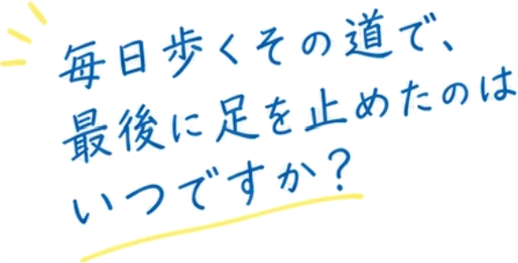
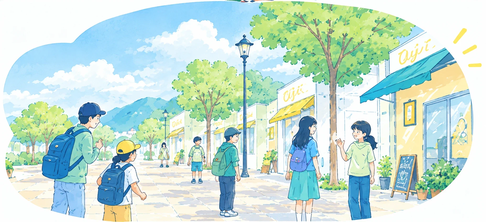
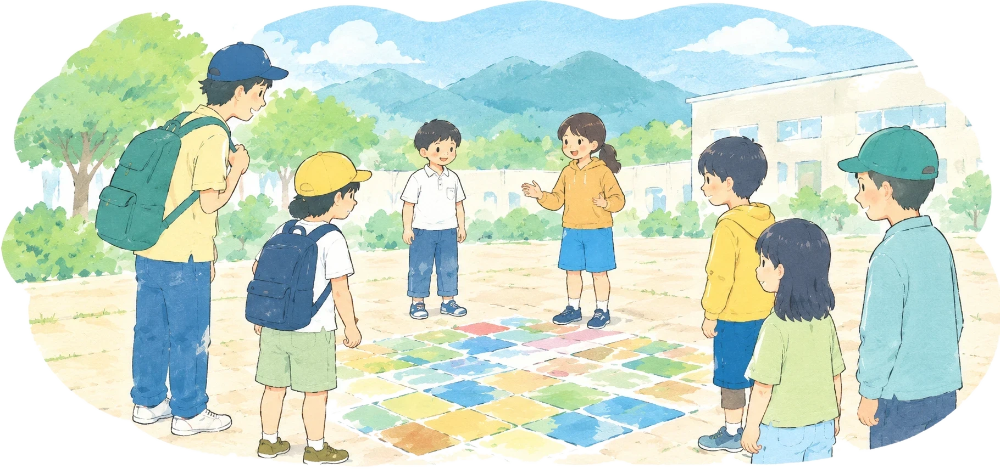
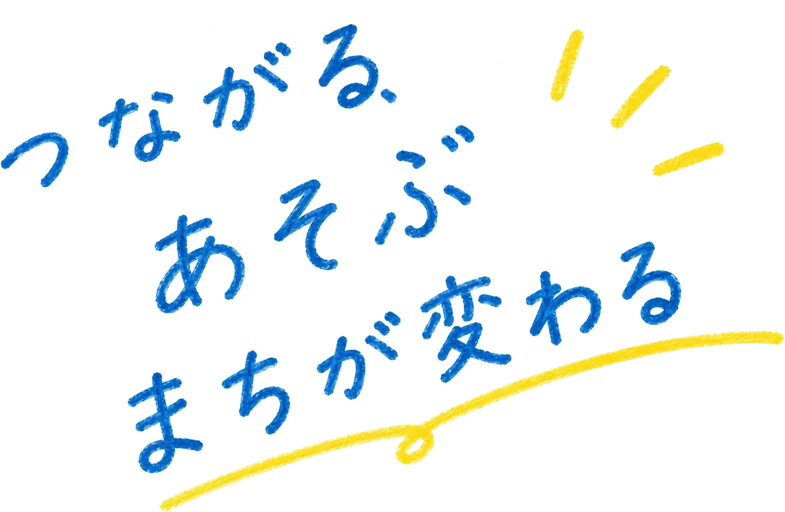
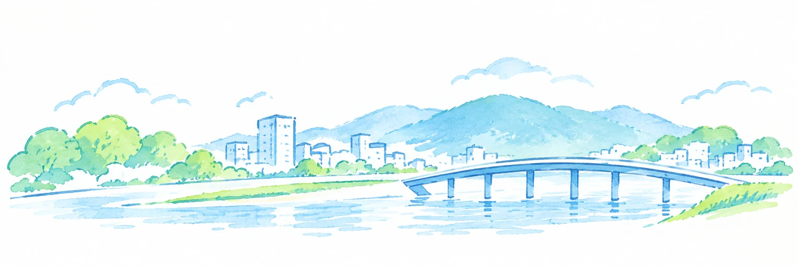
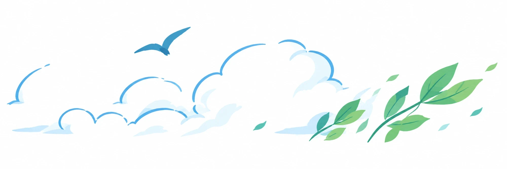

01
作る
まちを舞台にしたゲームや、思わず誰かと関わりたくなる仕掛けを企画・開発する。

まちには、目的地へ向かうための道や、
ただ通り過ぎるだけの広場があります。
そこでは、多くの人が同じ場所を利用していても、
互いを知ったり、関わったりする機会は
そう多くありません。
けれど、そんな公共空間にも、
人と人が出会い、お互いを知るきっかけが
眠っています。


MACHI PLAYは、公共空間に眠る、
そんな人と人との新たな関わりの可能性を、
遊びの力で切り拓いていく取り組みです。
その中で大事にしているのは、
一人ひとりの「好き」を大切にすること、
そして、人と一緒に何かを楽しむことです。
誰かと一緒に楽しみ、その人の好きなものや人柄を知る。
そんな出会いを通して、その人が暮らすまちも
少しずつ身近になっていきます。



いつもの道や広場に、思いがけない出会いや楽しみをつくる。
そんな夢に向かって、「楽しい」と「好き」を大切にしながら、
これからも活動を続けていきます。


ABOUT
通学路も、階段も、バス停も。毎日通り過ぎている場所に、小さな遊びを一つ置いてみる。それだけで、普段は交わらない人同士が一緒に笑い、見慣れた風景が少し違って見えてきます。そのきっかけを、まちの中に作っています。
01
まちを舞台にしたゲームや、思わず誰かと関わりたくなる仕掛けを企画・開発する。
02
子どもも大人も、通りかかった人も一緒に遊べる場を開く。
03
生まれたアイデアとつながりを展示し、記録に残して次のまちへ渡す。
REPORT
2026年10月3日、宇治市産業会館 多目的ホール。子どもたちが考えた「宇治のまちにあったらいいな」が9枚、会場に並びました。

駅やバス停、通学路、茶畑、雲の上。身近な場所から思いもよらない場所まで、絵と短い言葉で描いてもらいました。


PROFILE
宇治市未来キャンパス受講生。いつもの道をもっと面白くしたいと思い、まちで遊べる仕掛けやゲームを作っています。2026年10月のワークショップでは、企画・当日の運営・ゲームの開発を担当しました。
CONTACT
ワークショップの開催や取材のご相談、「うちのまちでもやってみたい」というお話も歓迎です。いただいた内容は、ご本人への返信にのみ使います。